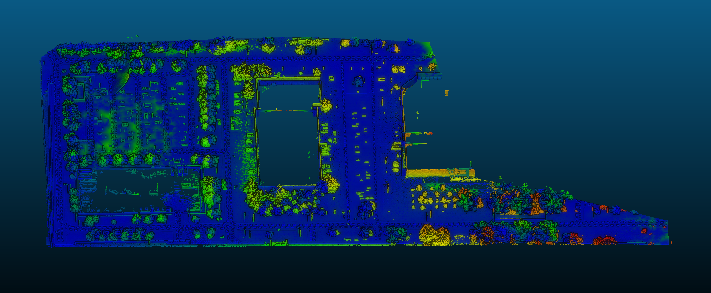
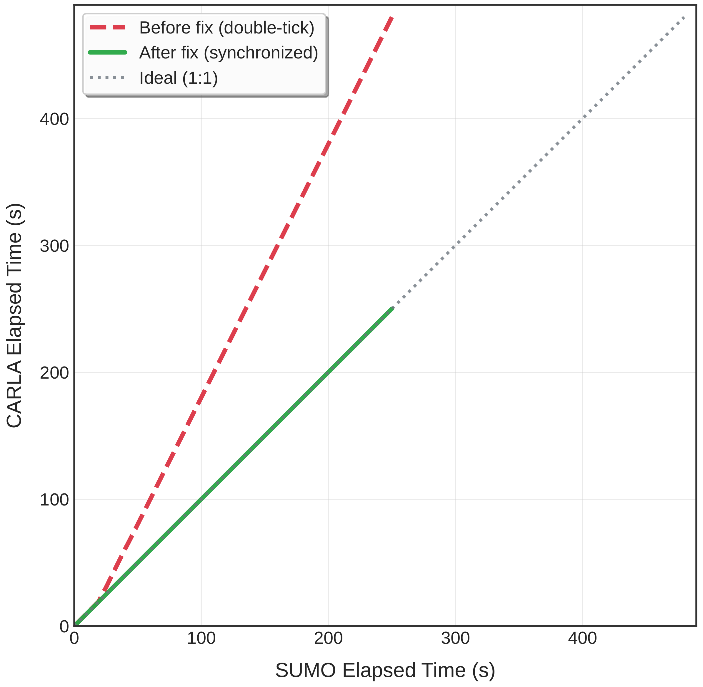

Visual Effects
Using nerfies you can create fun visual effects. This Dolly zoom effect would be impossible without nerfies since it would require going through a wall.
Constructing a Digital Twin of a Physical Testbed: A Practical Guide for Connected Autonomous Vehicle Simulation
This work presents an open-source digital twin framework that tightly integrates four pillars — Autoware Universe, MathWorks RoadRunner, SUMO, and CARLA — into a synchronized co-simulation environment for validating Connected and Autonomous Vehicles (CAVs). We demonstrate how to reconstruct high-fidelity road networks using GIS data, LiDAR point clouds, and photogrammetry-derived textured meshes. Our architecture resolves the double-tick timing conflict inherent in three-way co-simulation through an external tick master mechanism, ensuring deterministic, lock-step time advancement with zero drift.
We evaluate our method against a ground-truth LiDAR scan captured at the University at Buffalo proving ground, achieving strong geometric correspondence with an ICP RMSE of 0.635 meters (mean cloud-to-cloud distance: 0.183 meters). Synchronization validation across 5,000 simulation steps confirms that our fix eliminates 230 seconds of timestamp drift observed in prior approaches. This framework provides a reproducible, site-agnostic pipeline for building digital twins that bridge the gap between simulation-based testing and physical deployment.
The digital twin achieves high-fidelity geometric correspondence with the ground-truth LiDAR scan captured at the University at Buffalo proving ground. Our method demonstrates a registration RMSE of 0.635 meters and mean cloud-to-cloud distance of 0.183 meters, validating the reconstruction quality across diverse urban scenarios.

Our synchronization approach eliminates the timestamp drift inherent in three-way co-simulation. Across 5,000 simulation steps, we observe zero drift compared to 230 seconds of drift observed in prior approaches that use an internal CARLA tick alongside SUMO's external synchronization clock.

Using nerfies you can create fun visual effects. This Dolly zoom effect would be impossible without nerfies since it would require going through a wall.
As a byproduct of our method, we can also solve the matting problem by ignoring samples that fall outside of a bounding box during rendering.
We can also animate the scene by interpolating the deformation latent codes of two input frames. Use the slider here to linearly interpolate between the left frame and the right frame.

Start Frame

End Frame
Using Nerfies, you can re-render a video from a novel viewpoint such as a stabilized camera by playing back the training deformations.
The UB-DigitalTwin framework integrates several foundational projects in autonomous driving for comprehensive CAV evaluation:
Autoware provides the perception, planning, and control stack for autonomous vehicles. Our framework uses a modified ub_autoware_carla_interface that implements time-follower mode to synchronize with CARLA's external simulation clock.
MathWorks RoadRunner enables high-fidelity vehicle dynamics simulation for testing control algorithms under various vehicle models and road conditions.
SUMO (Simulation of Urban MObility) provides a traffic simulator with support for microsimulation of complex urban environments, used here to generate controllable NPC scenarios.
CARLA is an open-source autonomous driving simulator that offers photo-realistic rendering and supports a wide range of sensor configurations. Our UB-DigitalTwin framework includes the UBAutonomousProvingGrounds map with custom assets.
For mixed reality testing, see UB-MR, which provides a Unity-based client for bridging physical and virtual driving scenarios via UDP communication.
Additional related projects in the UB-CAVAS organization include AutowareUniverse (UB fork of the base AV stack), and ub-lincoln-docker (physical testbed Docker stack for the Lincoln MKZ).
@misc{gedela2026ubdigitaltwin,
author = {Thomas, Oakley and Gedela, Rahul and Pirangi, Anurag Hruday and Rah, Jee Heum and Kum, Yunchang and Korzelius, Steven and He, Chaozhe R. and Sadek, Adel W. and Qiao, Chunming},
title = {UB-DigitalTwin: A Framework for Co-Simulation of Connected Autonomous Vehicles},
year = {2026},
publisher = {GitHub},
journal = {GitHub Repository},
url = {https://github.com/ub-cavas/UB-DigitalTwin}
}Citation for the code repository. For a formal paper publication, please refer to the official arXiv entry when available.